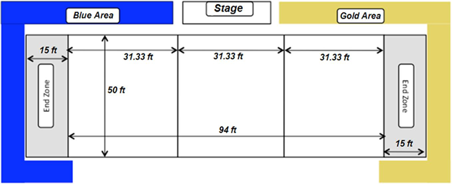

Competition Details
Students from Ohio Northern University's T.J. Smull College of Engineering have created a team of robotic football players to compete in the fifth annual Intercollegiate Mechatronic Football Tournament between Ohio Northern and Notre Dame on Saturday, April 6, at 7 p.m. in the Ohio Northern University King Horn Sports Center. The event is free and open to the public.
Competition Results
ONU 49 - Notre Dame 37
For a full play-by-play go here.
Competition Rules

In order to keep the competition fair a set of rules is enforced on all team. A full rulebook is available upon request.
These are some of the more important rules:
- 8 vs. 8 on field, 11 robots per team
- The game consists of two 15-minute halves
- The field is 94 feet long and 50 feet wide with 15 foot end zones
- Humans may only place the ball into the center or kicker, all other action must be robotic
- Max weight 30 lbs. excluding kicker
- Base plate must be 2.9 - 3.1 in. from the playing surface at all times
- All robots must fit within a 16 x 16 in square space with a maximum height of 24 in. excluding the kicker
- 24 v max voltage
- A robot is considered tackled when the g-force on the tackle sensor exceeds a programmed threshold and the indicator light is activated
Competition Location and Directions
The competition was held at the King Horn Sports Center, April 6th at 7PM.
King Horn Sport Center
609 West Lincoln Avenue
Ada, OH 45810
To get directions click here or the map.